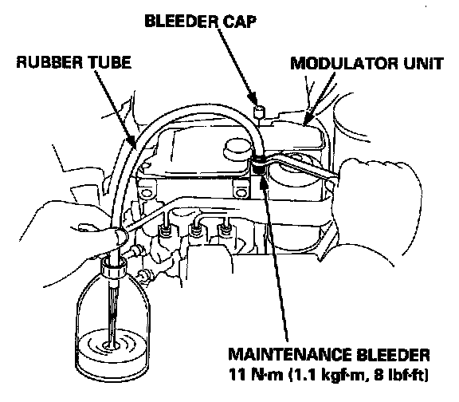
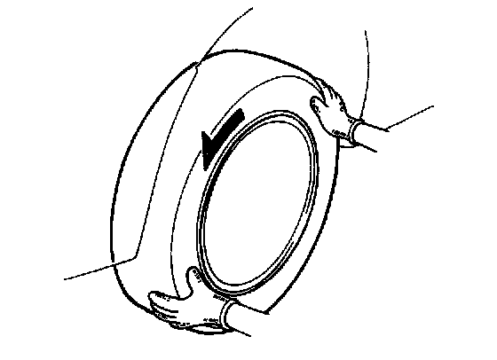
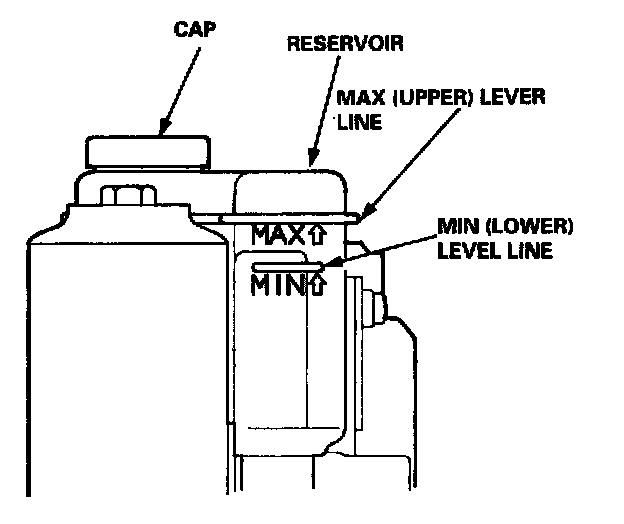

Modulator Function Test
Modulator Function CheckNOTE: This inspection determines whether the basic brake system continues to operate normally when the modulator unit fluid pressure is low.
CAUTION:
- This inspection is made by relieving the high-pressure fluid in the modulator unit and checking for brake operation. After inspection, be sure to add fresh brake fluid to the specified level of the reservoir, and start the engine to restore the ABS to its normal operating condition.
- Do not spill brake fluid on the car; it may damage the paint; if brake fluid does contact the paint, wash it off immediately with water.
- Do not reuse the drained brake fluid.
- Do not loosen the relief plug on the accumulator.

1. Remove the bleeder cap from the maintenance bleeder on the modulator unit.
2. Attach a wrench to the maintenance bleeder.
3. Connect a rubber tube of the appropriate diameter to the maintenance bleeder, and set the other end of the rubber tube in a suitable container.
4. While holding the rubber tube with your hand, slowly loosen the maintenance bleeder 1/8 to 1/4 turn to collect the brake fluid in the container.
CAUTION: Do not loosen the maintenance bleeder too much. The high-pressure brake fluid can burst out.
5. After the brake fluid stops flowing out, loosen the maintenance bleeder more to release the pressure completely.
6. Tighten the maintenance bleeder to the specified torque.
7. Raise the car off the ground, and support it with safety stands.

8. Have an assistant depress the brake pedal firmly, and check that the wheels do not rotate.
9. Remove the cap, and refill the reservoir to the MAX (upper) level with fresh brake fluid.
NOTE: Pour the brake fluid slowly so that it does not foam, and wait for a few minutes.
10. Start the engine and let it idle for a minute. Stop the engine.

11. Check the brake fluid level in the reservoir. It should be below the MAX (upper) level line. Refill the reservoir with fresh brake fluid to the MAX level line again.
12. After inspection, start the engine and make sure that the ABS indicator light goes off.